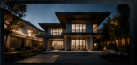
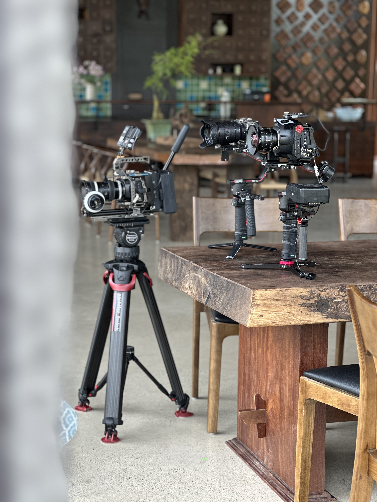
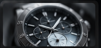

Rõ việc trước khi quay
Làm rõ nội dung phục vụ việc gì, nói với ai và phần tư liệu nào cần giữ lại.
VŨ ANH MEDIA
Nhiều doanh nghiệp có hình ảnh đẹp nhưng quá trình sản xuất lại phụ thuộc vào từng thời điểm, từng con người và từng cảm hứng ngắn hạn.
VŨ ANH MEDIA xây dựng quy trình sản xuất rõ ràng hơn để đội ngũ có thể duy trì nội dung đều, phối hợp dễ và sử dụng được lâu hơn về sau.

Mục tiêu, bối cảnh và người duyệt được làm rõ trước ngày quay.
Ánh sáng, âm thanh, khung hình và dữ liệu được giữ chặt trên set.
Bản cuối, bản rút gọn và tư liệu gốc được đặt đúng phiên bản.
Vì sao chọn
Điều doanh nghiệp cần về lâu dài không chỉ là vài sản phẩm nổi bật.
Mà là một cách làm việc giúp hình ảnh, nội dung và đội ngũ có thể phối hợp ổn định theo thời gian.
Làm rõ nội dung phục vụ việc gì, nói với ai và phần tư liệu nào cần giữ lại.
Lịch quay, shotlist, vai trò, mốc duyệt và phản hồi được thống nhất trước khi vào việc.
Khung hình, màu sắc, âm thanh và nhịp dựng được giữ cùng một chuẩn qua nhiều lần sản xuất.
Giữ lại kinh nghiệm sau mỗi lần làm việc để lần sau chuẩn bị nhanh hơn và ít hao sức hơn.
Dịch vụ
Mỗi doanh nghiệp bước vào media ở một thời điểm khác nhau. Có nơi cần một phim ra mắt được làm kỹ. Có nơi cần lịch quay đều. Có đội ngũ chỉ cần sắp lại tư liệu để những gì đã quay không bị bỏ phí.
Phù hợp khi anh/chị cần một bộ hình ảnh được chuẩn bị kỹ trước ngày bấm máy: phim thương hiệu, video sản phẩm, sự kiện, chân dung đội ngũ hoặc bộ ảnh doanh nghiệp.
Dành cho doanh nghiệp cần xuất hiện đều hơn, nhưng không muốn mỗi tháng lại bắt đầu từ một brief mới, một file cũ thất lạc và một cách làm khác.
Dành cho đội ngũ đã có nhiều file, nhiều người tham gia và cần cách brief, duyệt, lưu trữ, bàn giao gọn hơn để không thất lạc công sức đã bỏ ra.
Dự án tiêu biểu
Một dự án tốt thường bắt đầu bằng một nhu cầu rất cụ thể: ra mắt sản phẩm, ghi lại không gian, làm mới hình ảnh thương hiệu hoặc giữ nhịp nội dung trong một giai đoạn dài.

Phim chính, ảnh không gian và tư liệu giữ lại cho giai đoạn ra mắt.

Video chính, bản rút gọn và phiên bản bàn giao theo từng kênh.

Ảnh chủ đạo, video ngắn và bộ tư liệu chi tiết để dùng lại.
Một số dự án video, hình ảnh và nội dung định kỳ đã được VŨ ANH MEDIA thực hiện cho khách hàng trong các lĩnh vực thẩm mỹ, nha khoa, sản phẩm, sự kiện và đào tạo.


Ánh sáng mềm, bố cục giữ đúng tinh thần thương hiệu.

Chi tiết bề mặt, màu sắc và form dáng được giữ rõ.
Hình ảnh chỉn chu cho hồ sơ, website và nội dung.

Một nhịp quay định kỳ cho nhiều kênh sử dụng.

Giữ chất lượng đều mà không phải bắt đầu lại từ đầu.
Quy trình làm việc
Quy trình tốt không làm buổi quay cứng lại. Nó chỉ giúp đúng người biết mình cần chuẩn bị gì, duyệt gì, nhận lại gì và phần nào phải được giữ sạch sau khi dự án kết thúc.
Hiểu nhu cầu hiện tại, tình trạng tư liệu đang có và mức độ sẵn sàng của đội ngũ.
Thống nhất mục tiêu, định dạng, lịch quay, shotlist, người duyệt và mốc hậu kỳ.
Quay/chụp theo kế hoạch, đồng thời giữ đủ khoảng linh hoạt cho những khoảnh khắc thật.
Dựng, chỉnh màu, xử lý âm thanh, phụ đề và nhận phản hồi theo từng phiên bản.
Bàn giao bản cuối, tư liệu cần thiết và cấu trúc lưu trữ để sau này không phải hỏi lại.
Về chúng tôi
VŨ ANH MEDIA được xây như một nhóm production thực thụ: ít nói những điều bóng bẩy, dành nhiều sự chú ý cho brief, ngày quay, dữ liệu hiện trường và cách bàn giao sau cùng.
Kinh nghiệm thường nằm ở những việc nhỏ: biết khi nào cần quay thêm một góc, giữ lại âm thanh nền, đặt tên file đúng, hoặc nhắc khách duyệt đúng phiên bản trước khi đi tiếp.
Liên hệ
VŨ ANH MEDIA sẽ lắng nghe nhu cầu hiện tại của doanh nghiệp anh/chị trước khi đề xuất cách làm. Một dự án riêng, một lịch quay định kỳ hay một kho tư liệu cần sắp lại đều nên bắt đầu từ đúng bối cảnh kinh doanh.